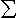
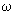

Масса является одной из важнейших характеристик ядра наряду с величиной заряда и размером ядра. В ядерной физике вместо массы ядра чаще используется энергия связи B, которая определяется как разность между суммой масс покоящихся протонов и нейтронов и массой ядра М:
B(Z,N) = (mpZ + mnN – M)c2 ,
где mp – масса протона, mn – масса
нейтрона, с-скорость света Z – число протонов, N – число нейтронов,
обычно энергия В (а нередко и масса М) выражается в энергетических
единицах (Мега-электрон Вольтах, МэВ). При этом ядро неявно
предполагается (следуя гипотезе, высказанной в 1932 году
Гейзенбергом и Иваненко) состоящим из нейтронов и протонов,
удерживаемых в ядре благодаря действию ядерных сил притяжения. Между
тем в настоящее время утверждение о том, что протоны и нейтроны
являются составными частицами ядра выглядит достаточно спорным,
поскольку сами нуклоны, как в этом уверены, состоят из кварков, и
вопрос лишь в том в какой мере нуклоны сохраняют свою
индивидуальность внутри ядра (а не диссоциируют на кварки). Недавно
путем уникальных численных расчетов системы шести кварков,
взаимодействующих с глюонным полем, удалось даже найти ( в рамках
квантовой хромодинамики, КХД на решетке) потенциал рр-взаимодействия
в синглетном и триплетном состояниях [1], который передает наиболее
характерные свойства ядерных сил. И тем не менее нейтронно0протонная
модель остается хорошим прибоижением.
В
настоящее время эксперимент позволил достаточно хорошо изучить
свойства ядерных сил. Наиболее важной особенностью ядерных сил
является их короткодействующий характер (радиус действия r0
- несколько единиц Ферми : r0~ 1-2 Фм, 1Фм = 10-13см ). Эту особенность NN- взаимодействия удалось понять Юкаве
на основе гипотезы о существовании взаимодействия нуклонов с
мезонным полем. Если рассматривать нуклоны как источник
Ф мезонного поля
 и
записать Лагранжиан взаимодействия нуклона с мезонным полем в виде L
= -g
и
записать Лагранжиан взаимодействия нуклона с мезонным полем в виде L
= -g Ф
и считать при этом
Ф
и считать при этом
 скаляром, а нуклон покоящимися, то дополнительная
энергия для системы двух нуклонов, возникающая за счет их связи с
мезонным полем (что интерпретируется как потенциальная энергия NN-
взаимодействия) оказывается равной
скаляром, а нуклон покоящимися, то дополнительная
энергия для системы двух нуклонов, возникающая за счет их связи с
мезонным полем (что интерпретируется как потенциальная энергия NN-
взаимодействия) оказывается равной
 1.4
Фм
1.4
Фм
С точки зрения квантовой теории поля взаимодействие между нуклонами
состоит в обмене мезонами. При этом реальными переносчиками
взаимодействия считаются пионы. Учитывая, что существуют как
нейтральные, так и заряженные мезоны и что массы заряженных и
нейтральных пионов отличаются незначительно, мезонная теория
объясняет почему нуклон-нуклонное взаимодействие проявляет
зарядово-обменный характер и притом имеет место зарядовая симметрия.
Далее, при учете того, что пионы являются не скалярными, а
псевдоскалярными, мезонная теория объясняет спиновую, нецентральную
и спин-орбитальную зависимость ядерных сил. Наконец, кроме нуклонов
она дает качественно правильные предсказания о взаимодействии других
типов барионов, например Λ и
Σ гиперонов.
Отсюда понятно почему мезоннообменные потенциалы используются в
качестве базиса для построения реалистических потенциалов
NN-взаимодействия. Между тем потенциалы мезонной теории сильно
расходятся в нуле (а ввиду большой величины константы взаимодействия
g расходится и ряд теории возмущений), тогда как, согласно
эксперименту, на самых малых расстояниях взаимодействие нуклонов от
притяжения переходит в очень сильное отталкивание (отталкивательная
сердцевина, кор). В связи с этим потенциалы мезонной теории
приходится корректировать путем введения феноменологических членов
(существование которых понятно с точки зрения кварковой теории),
обеспечивающих мощное отталкивание на самых малых расстояниях.
Существует впрочем и чисто феноменологический подход в теории
ядерных сил.
Среди реалистических потенциалов
NN-взаимодействия отметим потенциал Ниймегенской группы [2],
Боннский потенциал [3], Парижский потенциал [4], Московский
потенциал [5] и особенно Аргоннский потенциал [6]. Но в то же время
оказываются очень полезными и удобными для расчетов, особенно легких
ядер, более простые, хотя и менее совершенные потенциалы , в
частности потенциал Рейда [7] и другие [8-10], см. обзор [83].
Реалистические потенциалы NN-взаимодействия, претендующие на
описание широкого круга явлений (начиная от нуклон-нуклонного
рассеяния и кончая свойствами связанных нуклонных систем)
оказываются весьма сложными. Так Аргоннский потенциал v18
содержит 18 операторов, учитывающих спиновую и изоспиновую
зависимость ядерных сил, их нецентральный и спин-орбитальный
характер, зависимость от орбитального момента. Он включает различные
электромагнитные поправки вплоть до радиационных
и связанных со структурой нуклонов , а также учитывает нарушение
зарядовой независимости ядерных сил. Общее число параметров
достигает 40. Он позволяет практически с точностью эксперимента
описать np- и рр-рассеяние до энергий 350 МэВ и дать надежную
информацию о nn-взаимодействии, а кроме того получить правильную
энергию связи дейтрона, его размеры, величину магнитного и
квадрупольного момента, электрический и магнитный формфакторы [6].
Однако возникают трудности уже при расчете трехчастичных ядер 3Н
и 3Не, а также реакций p2H и n2H,
которые не удается устранить без введения трехчастичных сил NNN ,
существование которых естественно с точки зрения мезонной теории как
сил, связанных с двухпионным обменом между тремя нуклонами [12].
При добавлении к Аргоннскому NN- потенциалу трехчастичных NNN- сил
оказывается возможным не только достичь хорошего согласия с
экспериментальными значениями энергий трех и четырехчастичных ядер
3Н, 3Не и 4Не, но и более тяжелых ядер с
массовыми числами 5,6,7 и 8. При этом помимо энергий связи
достаточно хорошо согласуются с экспериментом и другие
характеристики этих ядер, в частности их размеры, магнитные и
квадрупольные моменты [15].
Квантовомеханический расчет систем, содержащих три и более частиц
потребовал создания мощных вычислительных методов, среди которых
кроме старого вариационного метода следует отметить метод
гиперсферических функций, метод
Фаддеева, метод Монте-Карло, метод функций Грина без и в
комбинации с методом Монте-Карло [83]. Расчет таких систем
потребовал проведения огромных по объему вычислений.
Однако трудности вычислений катастрофически возрастают по мере
увеличения числа частиц, а также при усложнении структуры NN-
потенциала, и при этом все труднее становится гарантировать
достаточно высокую точность расчета. Поэтому едва ли можно
рассчитывать, что в ближайшем будущем точные методы расчета с
реалистическими потенциалами удастся реализовать для систем с числом
нуклонов более двух десятков. Надежда остается лишь на использование
приближенных методов. По аналогии с атомными системами для расчета
сложных ядер используется метод Хартри-Фока или различные его
модификации, хотя условия применимости этого метода для ядер гораздо
хуже, чем в случае атомов, в частности это касается существования в
ядре некоторого среднего поля .
При расчете
ядер возникают не только технические трудности, связанными, например
с расходимостями в диаграммах более высокого порядка или
вычислительными проблемами, но, самое главное, не удалось ни для
каких реалистических или просто достаточно мягких нуклон-нуклонных
потенциалов обеспечить насыщение ядерных сил в ядрах, т.е получить
правильные значения энергий связи ядер при росте объемов ядер
пропорционально массовому числу А (см.например [13-14] ) Сказанное
относится и к теории ядерной материи ([25]).
Правда проблему насыщения ядерных сил удается решить при
использовании некоторых эффективных потенциалов, однако их связь с
реалистическими нуклон-нуклонными потенциалами далеко не очевидна.
Среди них очень удобными оказались потенциалы Скирма [13,14],
зависящие от плотности нуклонов и содержащие короткодействующие δ-образные
члены , которые при выборе нескольких параметров потенциала
описывают с хорошей точностью размеры ядер, а также позволяют с
удовлетворительной точностью рассчитать одночастичные энергии
нейтронов и протонов и находить полные энергии связи по крайней мере
для магических ядер.
2. Ядерные модели
В связи с остающейся
неопределенностью в выборе потенциала взаимодействия нуклонов и
трудностями в расчете энергий связи ядерных систем многих частиц,
особенно тяжелых и сверхтяжелых ядер, широкое распространение
получили ядерные модели, которые отражают важнейшие особенности
ядерных сил и связанные с ними свойства ядер.
По поводу выбора моделей ядер можно выделить две на первый взгляд
противоречивые точки зрения, в пользу каждой из которых приводятся
достаточно весомые аргументы.
Одна из этих
моделей – жидкокапельная - предполагает, что благодаря сильному
взаимодействию нуклоны участвуют в коллективном движении, что
естественным образом объясняет почему объемы и ( в значительной
степени энергии ядер) растут пропорционально числу частиц. Другая
модель- независимых частиц- считает, что несмотря на сильное
взаимодействие между нуклонами в ядре возникает самосогласованное
поле, в котором нуклоны движутся как квазинезависимые частицы.
Существует, наконец, гибридная (обобщенная) модель, в которой
предполагается, что ядро можно рассматривать как жидкокапельный
остов, относительно которого движутся сравнительно слабо с ним
связанные внешние нуклоны.
В жидкокапельной
модели при нахождении потенциальной энергии оказывается возможным
исходить из классической теории и рассуждать следующим образом.
Предполагая, что ядро сферически-симметрично и имеет радиус R,
значительно превосходящий по размерам радиус действия ядерных сил r0,
можно подсчитать среднюю энергию взаимодействия
выделенного нуклона со всеми остальными нуклонами как произведение
средней энергии взаимодействия между двумя нуклонами v на число
нуклонов в сфере радиуса r0, т.е как
 ,
где
,
где  .
Отсюда, умножая на А/2, находим энергию взаимодействия нуклонов
.
Отсюда, умножая на А/2, находим энергию взаимодействия нуклонов
 или, поскольку
радиусы ядер растут по закону R = r0A1/3, то
или, поскольку
радиусы ядер растут по закону R = r0A1/3, то
| Ev = C1A, | (1) |
где C1 = v/2(Rо/rо)3.
Будем называть эту энергию объемной и подсчитаем неучтенную при этом
энергию нуклонов в поверхностном слое толщиной
δ = r0. Если в среднем
для каждого из нуклонов поверхностного слоя за поверхность ядра
выходит часть сферы радиуса R0 равная
ν, то недостающая часть
энергии взаимодействия нуклонов ( поверхностная энергия) равна
|
|
(2) |
Отметим, что квантовомеханический расчет при использовании статистической модели (используются плоские волны для одночастичных волновых функций) приводит к аналогичному результату [11]. Однако при расчете кинетической энергии в рамках квантовой механики необходимо учитывать, что нуклоны являются фермионами и на них распространяется принцип Паули, в соответствии с которым нуклоны не могут находиться все на одном и том же низшем энергетическом уровне, а поэтому будут заполняться уровни с все более высокой энергией, на каждом уровне по два протона ( с противоположной ориентацией спина) и по два нейтрона. При этом в основном состоянии ядра будут заполняться все нижние уровни. Кинетическая энергия ядра представляет собой сумму:

где Рk- импульс нуклона k.
В
статистическом приближении одночастичных волновые функции нуклонов
записываются в виде плоских волн, обращающихся в нуль на границе и
вне ядра. Для простоты рассуждений заменим сферическое ядро радиуса
R на равновеликий куб со стороной а: 4πR3/3
= a3 .Тогда волновую функцию нуклона внутри ядра
можно записать в виде ψ(x,y,z) =
A sinkxx . sinkyy . sinkzz
, причем из требования обращения ψ(x,y,z)
в нуль на границе ядра (т.е. при
ψ(0,y,z) = ψ(x,0,z) =
ψ(x,y,0) =
ψ(a,y,z) и т.д.) kx,
ky и kz должны удовлетворять условиям: kxа = πnx
, kya = πny
, kzа = πnz , где
nx ,ny и nz -
целые числа. Собственными значениями операторов px, ру
и pz являются px =
πnx /a, py =
πny
/a и pz = πnz
/a, а полная кинетическая энергия ядра

При суммировании по nx , ny и nz пробегаются все точки решетки (с параметром 1) в пространстве переменных nx , ny и nz, так что можно записать

Переходя вместо суммирования к интегрированию, получим при выборе сферических координат n, θ, φ вместо nx, ny и nz

Или, если пренебречь различием масс нейтрона и протона, то:
 .
.
При этом

Отсюда n(Z) = (3/8π)1/3Z1/3
и n(N) = (3/8 )1/3N1/3
.
)1/3N1/3
.
А следовательно
T = 4π32 /5ma2(3/8 )5/3 (Z5/3
+ N5/3),
)5/3 (Z5/3
+ N5/3),
Или, поскольку a = r0(4πA/3)1/3 , то
T = 9/80(3/2π)1/3π2/mr02/3 (Z5/3 + N5/3 )/A2/3
Вместо Z и N удобно вести A = Z + N и I = N - Z. Учитывая далее, что для реальных ядер I/A<< 1, можно записать:
(Z5/3 + N5/3 )/A2/3
 A/22/3(
1 + 5/9.(A - 2Z)2/A2).
A/22/3(
1 + 5/9.(A - 2Z)2/A2).
А следовательно
| T = CkA( 1 + 5/9.[(A - 2Z)/A)2], | (3) |
где Сk константа.
Учтем еще кулоновскую энергию ядра
| Ec = -C3Z2/A1/3 | (4) |
При учете объемной энергии (1), поверхностной энергии (2), а также кулоновской энергии (4) и энергии симметрии, пропорциональной в (3) (A-2Z)2/A ( в нее дает вклад также энергия, связанная с пионным обменом [16]), выражение для полной энергии связи ядра В можно записать в виде суммы :
| B(A,Z) = C1A - C2A 2/3 – C3Z2/A1/3 - C4(A-2Z)2/A. | (5) |
Эту формулу получили Бете и Вейцзекер еще в 1932 году и теперь она носит их имя, см.[11]. Как показывает анализ экспериментальных данных, при прочих равных условиях энергии связи четно-четных ядер (Z - четное, N - четное) больше, чем нечетных ядер( А - нечетное), а последних больше, чем нечетно-нечетных ядер ( Z - нечетное, N - нечетное).Чтобы учесть этот эффект спаривания в формулу Бете-Вейцзекера добавляют еще поправку на четность Р(А). При оптимальном выборе поправки на четность в виде
|
|
(6) |
где δ = 5.55 МэВ и параметров
| C1 = 15,75 MеВ, С2 = 17,8 МэВ, С3 = 0,71 МэВ, С4 = 23,7 МэВ | (7) |
формула (5) описывает энергии всех известных ядер
(за исключением самых легких) со среднеквадратичным отклонением 2,7
МэВ при максимальном отклонении около 10 МэВ.
При этом полная энергия ядра
| E(Z,N) = (Zmp + Nmn)c2 – B(Z,N). | (8) |
При А = cоnst энергия Е достигает минимума при Z = Z*, которое определяется из условия E/Z = 0. Отсюда
 |
(9) |
где Δм = (mn - mp)c2. E(A,Z) можно представить в виде:
| E(A,Z) = E(A,Z*) + k(Z – Z*)2 , | (10) |
где
 откуда видно, что изобарное сечение ядерной энергетической
поверхности представляет собой квадратичную параболу.
откуда видно, что изобарное сечение ядерной энергетической
поверхности представляет собой квадратичную параболу.
 Рис.1. Энергии изобаров с A четным. |
Как следует из (9) и (10), в случае нечетных
ядер (А – нечетное) , наиболее стабильным является изобар с Z
наиболее близким к Z*. В случае четных А изобарная
парабола ядер с четными Z лежит ниже, чем для нечетных Z (согласно
(6) на величину 2/А1/2).
Реально превращение одного изобара в другой возможно путем
β-распада (β-,
β+ или же
электронного захвата).Условием энергетической возможности
β--распада ядра (А, Z) является
E(A,Z) - E(A,Z+1) > mec2
(me – масса электрона), а возможности электронного
захвата
E(A,Z) + mec2 > E(A,Z-1). Отсюда в
соответствии со значениями коэффициента k и величины
лишь в немногих случаях нечетно-нечетные ядра
оказываются стабильными (экспериментально-это ядра 2H,
6Li, 10B,
14N, а также редкие изотопы 40K, 50V, 138La,
170Lu, 180Ta).В то же время известны случаи,
когда стабильными как относительно
β--распада, так и
электронного захвата оказываются два или даже три четно-четных
изобара ( например124Sn,
124Te, 124Xe), а некоторые нечетно-нечетные изобары
способны испытывать два различных типа распада (см.схему распада на
рис.1)
3. Глобальные массовые формулы с оболочечными поправками
В связи с тем, что расхождения формулы Бете-Вейцзекера с
экспериментом довольно значительны, делались многочисленные попытки подправить
формулу, основываясь на общих представлениях о структуре ядра и свойствах
ядерных сил, учитывая, например, отсутствие у ядра строго очерченной границы.
Однако такого рода попытки не привели к существенному улучшению результатов (по
поводу массовых формул опубликованных до 1970 года см. например, обзоры [16,
84]). Как выяснилось в дальнейшем, главная причина состояла в том, что не
учитывалось заполнение в ядре оболочек протонов и нейтронов, что проявляется в
значительном повышении энергии связи тех ядер, которые содержат число нейтронов
и протонов равное 2, 8, 20, 28, 50, 82, 126. Эти числа получили название
магических.
Модель ядерных оболочек была предложена в 1949 году
М.Гепперт-Майер и
Г.Иенсеном,
которые показали, что магические числа нуклонов и связанные с этим свойства ядер
получают объяснение, если считать, что в ядре создается некоторое среднее поле с
короткодействующим потенциалом, в котором движутся нуклоны и притом существует
сильное спин-орбитальное взаимодействие.
(Отметим, что идея о заполнении в ядре оболочек нейтронов и протонов была
высказана еще в 1932 году Эльзассером [16] и Гугенгеймером [17] на основе
анализа энергий связи и распространенности элементов, и были указаны практически
все принятые в настоящее время магические числа. Более того, было показано, что
они получаются при расчете положения уровней нуклонов в потенциальной яме,
например, прямоугольной формы. Однако это относилось к числам 2, 8, 20.
Появление магических чисел 28, 50, 82 и 126 удалось объяснить Гепперт-Майер при
учете спин-орбитального взаимодействия.)
Как показывает анализ экспериментальных данных (см.[17]), ядерные
периодичности проявляются во многих свойствах ядер, начиная с энергий связи и
кончая сечениями ядерных реакций и запретами в  ,
,  и
и  -переходах.
-переходах.
 Рис.2. Разность между экспериментальными энергиями связи В и вычисленными по формуле Бете-Вейцзекера. Точки, соответствующие одному и тому же Z, соединены линиями. Во избежание загромождения рисунка были выбраны ядра лишь для одного (чч) типа четности, и по той же причине линии проводились не везде |
 Рис.3. Разность между линией бета-стабильности Бете-Вейцзекера Z*БВ и "экспериментальной" Z* (найденной из экспериментальных данных) |
В качестве примера на рис.2 показывается как скачкообразно
меняется разность  В
между экспериментальными и вычисленными (по гладкой формуле Бете-Вейцзекера)
энергиями связи В в зависимости от числа нейтронов. Аналогичные скачки
В
между экспериментальными и вычисленными (по гладкой формуле Бете-Вейцзекера)
энергиями связи В в зависимости от числа нейтронов. Аналогичные скачки  В
наблюдаются при пересечении магических чисел протонов. Кроме того, как видно на
рис.3, кривая Z*, построенная на основе экспериментальных энергий
В
наблюдаются при пересечении магических чисел протонов. Кроме того, как видно на
рис.3, кривая Z*, построенная на основе экспериментальных энергий
 -распада,
не является (как это следует из формулы Бете-Вейцзекера) гладкой функцией А, а
представляет собой отрезки прямых, испытывающих разрывы при пересечении
магических чисел протонов, а также и нейтронов.
-распада,
не является (как это следует из формулы Бете-Вейцзекера) гладкой функцией А, а
представляет собой отрезки прямых, испытывающих разрывы при пересечении
магических чисел протонов, а также и нейтронов.
Поскольку выяснилось, что оболочечные эффекты существенны для
энергий связи ядер, возникла идея построения такой массовой формулы глобального
типа (т.е способного описать всю систему ядер), как, например, формула
Бете-Вейцзекера, но которая в отличие от последней учитывала бы эффекты
заполнения оболочек.
Учет эффект заполнения оболочек во многих работах
производился путем введения оболочечных поправок в жидкокапельную часть формулы
для энергий связи ядер, в качестве которой бралась формула Бете-Вейцзекера.
Майерс и Святецкий [20] рассчитывали оболочечную поправку как
разность энергии уровней оболочечной модели и жидкокапельной (статистической)
модели. Согласно статистической модели (модели Ферми-газа) при Z = N = A/2
энергия нуклона на верхнем из заполненных уровней (энергия Ферми, см.(3)) равна  /8)2/32/(2mnr02),
/8)2/32/(2mnr02),

а разность кинетической энергии нуклонов в оболочечной модели и в жидкокапельной (однородной) модели , что можно рассматривать как оболочечную поправку, равна [20]:

где С – подгоночная константа. q(n)dn можно записать в виде суммы по оболочкам qi и, если в качестве qi выбрать среднее значение энергии нуклона в промежутке между магическими числами Mi и Mi-1, то [19] :

 при Mi-1
< N < Mi.
при Mi-1
< N < Mi.
В качестве жидкокапельной части формулы для масс Майерс [23]
предлагает так называемую капельковую (droplet) модель, которая улучшает формулу
Бете-Вейцзекера тем, что во-первых учитывает отсутствие у ядра строго
ограниченной поверхности, а именно постепенное спадание плотности нуклонов в
поверхностном слое. Во-вторых учитывается сжимаемость ядра. В связи с этим в
формуле для масс Майерса появляются поправочные члены пропорциональные А1/3,
Заполнение одночастичных уровней (j,m) приводит к появлению
квадрупольного момента, который в случае одной частицы в сферически-симметричной
потенциальной яме равен
 ). Но оболочечная часть
энергии может уменьшаться (пропорционально
). Но оболочечная часть
энергии может уменьшаться (пропорционально  ) и
в итоге при достаточно большом числе нейтронов и протонов ядру может оказаться
энергетически выгодно деформироваться. Это действительно экспериментально
наблюдается вдали от заполненных оболочек (например в области лантанидов и
актинидов). Порядок заполнения уровней существенно меняется в зависимости от
величины деформации ядра. Нильсоном [22] был проведен расчет энергии уровней для
случая аксиально-симметричной потенциальной ямы:
) и
в итоге при достаточно большом числе нейтронов и протонов ядру может оказаться
энергетически выгодно деформироваться. Это действительно экспериментально
наблюдается вдали от заполненных оболочек (например в области лантанидов и
актинидов). Порядок заполнения уровней существенно меняется в зависимости от
величины деформации ядра. Нильсоном [22] был проведен расчет энергии уровней для
случая аксиально-симметричной потенциальной ямы:
U(r) = (x x2 + y y2 + zz2 )/2 + C (LS) + D L2 ,
где x2
= y2
= z2(1
+ 2/3 2),
L и S -операторы орбитального и спинового моментов, соответственно, С и D
-константы.
2),
L и S -операторы орбитального и спинового моментов, соответственно, С и D
-константы.
 Рис.4. Схема уровней Нильсона. |
Схема низших уровней для случая нильсоновского потенциала
в зависимости от параметра деформации  показана на рис.4. Как видно из рис.4,
при увеличении деформации обычные магические числа становятся все менее четко
выраженными, а пучки уровней между магическими числами оказываются все более
размытыми.
показана на рис.4. Как видно из рис.4,
при увеличении деформации обычные магические числа становятся все менее четко
выраженными, а пучки уровней между магическими числами оказываются все более
размытыми.
В связи с этим важным становится понятие плотности уровней.
Струтинский [21] предложил описывать плотность уровней, исходя из схемы
Нильсона, при помощи непрерывной функции
 , , |
(11) |
где γ – интервал усреднения, Eν(β)
– энергия нуклонного уровня ν
при деформации  .
Как показывается в работе [21],при усреднении по достаточно широкому интервалу
энергий γ
.
Как показывается в работе [21],при усреднении по достаточно широкому интервалу
энергий γ 1( в единицах )
плотность gγ(E) соответствует
равномерному (однородному) распределению уровней , что можно сопоставить с
плотностью уровней жидкокапельной модели. При малых же
1( в единицах )
плотность gγ(E) соответствует
равномерному (однородному) распределению уровней , что можно сопоставить с
плотностью уровней жидкокапельной модели. При малых же

для протонов и аналогичного интеграла для нейтронов. При этом g( ,E) вычисляется по формуле (11) при
γ = 0,2, а G(
,E) вычисляется по формуле (11) при
γ = 0,2, а G( ,E)
- при γ = 0,7 [21] . Как показывают расчеты,
оболочечная поправка достигает наибольших значений при магических числах
нуклонов и она минимальна в промежутке между этими числами, а это означает, что
вблизи магических чисел ядра должны быть сферически-симметричными, а в областях
между ними – быть деформированными.
,E)
- при γ = 0,7 [21] . Как показывают расчеты,
оболочечная поправка достигает наибольших значений при магических числах
нуклонов и она минимальна в промежутке между этими числами, а это означает, что
вблизи магических чисел ядра должны быть сферически-симметричными, а в областях
между ними – быть деформированными.
Для нахождения равновесной деформации следует находить
экстремум суммы оболочечной поправки и поверхностной энергии, последняя в
простейшем варианте аксиальной деформации записывается в виде [21]:
E0{2/5(1-x) 2 – 0,0038(1+2x)
2 – 0,0038(1+2x) 3 + ……},
3 + ……},
где  – параметр деформации и х = (Z2/A) /( Z2/A)кр
- критическая энергия деления. Зная как меняется энергия
при деформации, можно рассчитать порог деления и вероятность спонтанного деления
тяжелых ядер. При использовании в качестве макроскопической (жидкокапельной)
части энергии ядра- капельковой модели Майерса [23] , а в качестве оболочечной
поправки (микроскопической энергии) - варианта Майерса-Святецкого [20] или же
Струтинского [21] оказывается кроме того возможным улучшить описание масс ядер.
– параметр деформации и х = (Z2/A) /( Z2/A)кр
- критическая энергия деления. Зная как меняется энергия
при деформации, можно рассчитать порог деления и вероятность спонтанного деления
тяжелых ядер. При использовании в качестве макроскопической (жидкокапельной)
части энергии ядра- капельковой модели Майерса [23] , а в качестве оболочечной
поправки (микроскопической энергии) - варианта Майерса-Святецкого [20] или же
Струтинского [21] оказывается кроме того возможным улучшить описание масс ядер.
Так в работе [24] при вычислении макроскопической части
энергии в соответствии с капельковой моделью [23] и микроскопической части в
виде оболочечной поправки Майерса-Святецкого удалось при введении 50 параметров
достичь достаточно хорошего описания масс с среднеквадратичной ошибкой 0,67 МэВ
при максимальном отклонении ~1,5 МэВ.
Примерно такой же результат (
 0,7
МэВ) был достигнут Зигером и Говардом [25], которые при вычислении оболочечной
поправки предпочли использовать метод Струтинского [21]. При этом параметры
потенциалов оболочечной модели брались различными для различных областей и они
не считались одинаковыми для нейтронов и для протонов. Формула для масс в [25]
содержит модифицированный член энергии симметрии (N-Z)2/A(1+2BsA-1/3)
с параметром Bs, зависящим от формы ядра, а кулоновская энергия кроме
прямого члена включает также обменный и спин-орбитальный член, аналогично работе
[26] .
0,7
МэВ) был достигнут Зигером и Говардом [25], которые при вычислении оболочечной
поправки предпочли использовать метод Струтинского [21]. При этом параметры
потенциалов оболочечной модели брались различными для различных областей и они
не считались одинаковыми для нейтронов и для протонов. Формула для масс в [25]
содержит модифицированный член энергии симметрии (N-Z)2/A(1+2BsA-1/3)
с параметром Bs, зависящим от формы ядра, а кулоновская энергия кроме
прямого члена включает также обменный и спин-орбитальный член, аналогично работе
[26] .
Микро-макро (ММ) подход был использован также в работе
Мёллера и Никса [27].
Макроскопическая часть энергии вычислялась на основе
жидкокапельной [20] и капельковой [23] модели, а микроскопическая (оболочечная)
часть - в соответствии с методом усреднения Струтинского [21]. Заметим по поводу
вклада различных членов в полную энергию, что в области самых тяжелых ядер
вариация первого члена оказывалась в пределах ~200 МэВ, а второго лишь ~12 МэВ.
Именно оболочечная поправка обеспечивает существование сверхтяжелых элементов.
Cпецифика предлагаемой в [27] формулы для масс в том, что
объемная энергия включает поправку на симметрию, а обобщенно-поверхностная
энергия записывается ( для правильного вычисления порога деления) в виде
интеграла с потенциалами юкавского и экспоненциального типа. Кроме того, формула
содержит постоянный член, вигнеровскую энергию и энергию зарядовой асимметрии.
Несмотря на включение в рассмотрение эффекта собственной структуры нуклонов и
учет энергии связи атомных электронов точность формулы не очень высока
Аналогичный подход был использован Смолянчуком и Собичевским
[29] в теоретическом анализе проблемы сверхтяжелых элементов с той разницей, что
в членах. содержащих зависимость от формы ядра. учитывались более высокие
порядки мультипольности вплоть до восьмого.
Проблеме сверхтяжелых элементов был посвящен ряд выполненных недавно
теоретических работ [30-35]. Наилучшие результаты в смысле согласия с последними
экспериментальными измерениями энергий  -распада
Qa элементов с Z > 100 были, как отмечалось в [56], получены в
работах [31-35] При этом чаще всего использовался ММ-подход. Заметим однако, что
говоря о предсказательной силе этих работ, следует иметь в виду, что
параметризация формул производилась в них уже после опубликования части новых
экспериментальных результатов по сверхтяжелым элементам. Для самых тяжелых
элементов с Z > 104 наиболее близкие к эксперименту результаты содержатся
в статье Барана и др. [31]. Формула для масс в этой работе включает
Люблинско-Страсбургский вариант макроскопической части и имеет вид:
-распада
Qa элементов с Z > 100 были, как отмечалось в [56], получены в
работах [31-35] При этом чаще всего использовался ММ-подход. Заметим однако, что
говоря о предсказательной силе этих работ, следует иметь в виду, что
параметризация формул производилась в них уже после опубликования части новых
экспериментальных результатов по сверхтяжелым элементам. Для самых тяжелых
элементов с Z > 104 наиболее близкие к эксперименту результаты содержатся
в статье Барана и др. [31]. Формула для масс в этой работе включает
Люблинско-Страсбургский вариант макроскопической части и имеет вид:
M(Z,N,def) = ZMp + NMn – C1Z
2,39
– bv (1 – kvI2)A +
+ bs(1 – ksI2)A2/3Bs + bk(1
– kkI2)A1/3Bk
+ 3/5e2Z2/A 1/3,


{kind=link}